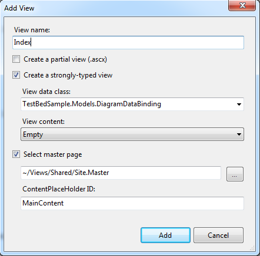
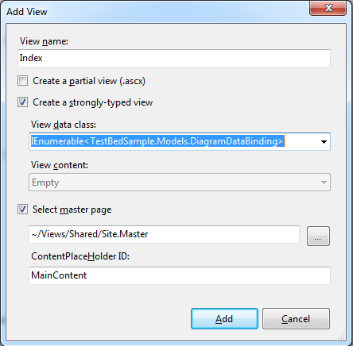

To create a strongly typed view:
1. Right-click the View > Home folder.
2. Delete the existing Index.aspx (To make it remain as a default action).
3. Click Add, and then select View.
4. Name the view Index.
5. Select the box that says creates a strongly typed view, and on the drop down menu select your model. In this case it is MvcSampleApplication.Models.AppointmentTable.

Figure 148: Strongly Typed View—Index
 Note: The View Data class drop-down list will be
empty until you successfully build your application. It is a good idea to select
the menu option Build > Build Solution before opening the Add New
dialog.
Note: The View Data class drop-down list will be
empty until you successfully build your application. It is a good idea to select
the menu option Build > Build Solution before opening the Add New
dialog.
6. In a View Data class, make the model IEnumerable collections as shown below:

Figure 149: View Data Classes as IEumerable Collection